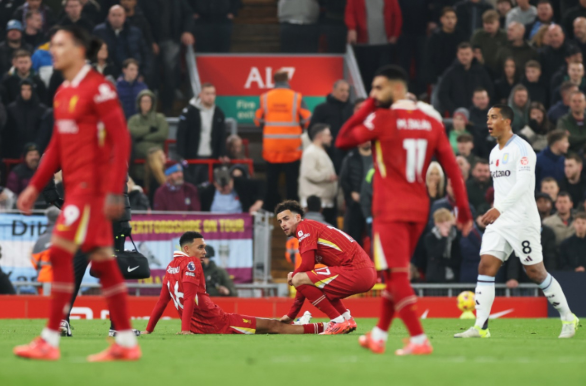

Martin Ødegaard coming back?

Based on the latest information, Martin Ødegaard is expected to return to the Arsenal lineup sometime in November. While the exact date is unclear, he has already returned to team training after being out for two months with an ankle injury. Ødegaard sustained his ankle injury in a nasty-looking incident while on international duty with Norway in September.
Trent injury admist transfer rumours?
Trent Alexander-Arnold sustained a hamstring injury during Liverpool's match against Aston Villa on Saturday. He was substituted after 25 minutes due to the injury. The severity of the injury is still being assessed by the club's medical team, but it is likely that he will miss some upcoming games. The injury occurred after he collapsed to the ground and appeared to be in distress, despite no contact with another player.
Cole Palmer minor or major injury?

Cole Palmer, a Chelsea player, sustained a knee injury during a match against Manchester United. While the severity of the injury is unclear, He was recently named in the England squad for upcoming matches, suggesting the injury is not too serious. Chelsea fans are hopeful that Palmer will be able to return to the field soon.
Rodri out for the rest of the season

Rodri, a key midfielder for Manchester City, suffered a serious knee injury during their match against Arsenal on Sunday. The injury, which has been confirmed as a torn ACL and meniscus damage, will require surgery and is expected to sideline him for the rest of the season. The injury has raised concerns about the impact it will have on Manchester City's performance for the remainder of the season, as they are currently in a tight title race.